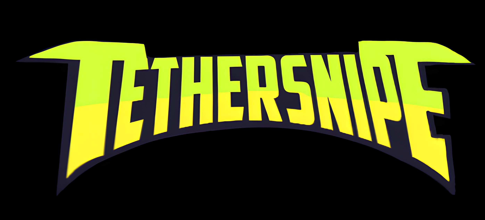

A manager of a dying arcade takes intitiative to follow her moral convictions admist the recession. A jaded entomologist clocks in after committing academic fraud for breakfast. A listless teenager suffocated by boredom has nothing better to do.
They play a game that hasn't been touched for a very, very long time.
Fall semester can't come soon enough... if it comes at all.
Can you make all the right choices? Or will you ensnare the characters in a web of tangled truths?
Tethersnipe is an interactive theater experience created in collaboration with Dooleys Players.
Credits:
Creator: Space Lutterodt-Clottey
Director: Space Lutterodt-Clottey
Creative Director: Nellie Gregg
Writer/Actor: Alexander Kauffman
Writer/Actor: Tracy Li
Writer/Actor: Emma Gordon
Writer: Space Lutterodt-Clottey
Props Master: Sam Perry
Sound: Sarinah Reichle
Assistant Stage Manager: Jani Carr
Stage Manager: Lauren Stephenson
Production Manager: Marjory Ignacio-Almazan
Dramaturg: Nellie Gregg
Head of Set: Krisha Jain
Head of Sound: Sarinah Reichle
Sound Operator: Sarinah Reichle
Head of Lighting: Alex Lee
Head of Costume: Lucy Shainin
Music: Ishaan Jain
Tethersnipe Theme Composition: Nellie Gregg
Tethersnipe Theme Rendering: Vi Eicher
Cinematography: Mathew Paulin
Cinematography: Jaelyn Dudley
Assistant Cinematography: Von Stroud
Editor: Alexander Kauffman
Trailer Editor: Space Lutterodt-Clottey
Intimacy Coordination: Kayla Ibarra
Photography: Indigo Shi
This production would not have been possible without the efforts by the Dooleys Players 2025-26 board.